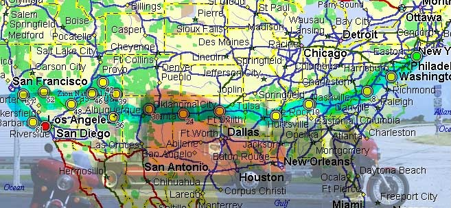

Benvenuto
1999, USA Coast to Coast in solitaria
... con la mia Moto Guzzi del 1973 ex Polizia spedita per nave

Preludio
Preludio
L’America cominciò come una linea sull’asfalto. Dritta, lontana, irreale. A un metro da terra l’orizzonte era ovunque e la Moto Guzzi, carica di strada e di sogni, avanzava come una nave in un mare solido. Dietro di me Anna, davanti ottomila chilometri: da New York a Los Angeles.
Quel viaggio nasceva da un’idea antica, un coast-to-coast immaginato da ragazzi e rimasto a lungo chiuso in un cassetto. Poi la vita aveva fatto il suo corso: l’incontro giusto, la moto giusta, il momento giusto. Decidemmo di attraversare gli Stati Uniti da soli, senza tappe fisse, evitando le città, scegliendo le strade secondarie, dormendo dove capitava. Non volevamo “vedere” l’America, volevamo starci dentro.
La strada ci mise subito alla prova: una gomma bucata, temporali violenti, caldo soffocante, lunghi tratti senza servizi. Poi la Route 66, con i suoi paesi fantasma e le pompe di benzina abbandonate, il Mississippi attraversato come un confine simbolico, l’incontro con persone vere, curiose, spesso generose. Più andavamo verso ovest, più il paesaggio cambiava rapidamente: pianure, deserti, canyon, montagne rosse, altipiani battuti dal vento.
Entrammo nel grande West lasciando alle spalle le certezze. Monument Valley sotto la pioggia, strade sterrate sul bordo del vuoto, silenzi assoluti. Poi il Grand Canyon, Zion, Bryce: luoghi che non si attraversano, ma si subiscono. Infine la Death Valley, affrontata nell’ora peggiore, con il caldo che bruciava la pelle e l’aria che toglieva il respiro. La moto resse, noi anche.
Quando iniziammo a scendere verso la California capimmo che il viaggio stava già diventando memoria. Non era stata una vacanza, ma un attraversamento: della geografia, del limite, e di un momento della nostra vita che non sarebbe tornato. Questo è il racconto di quella strada.